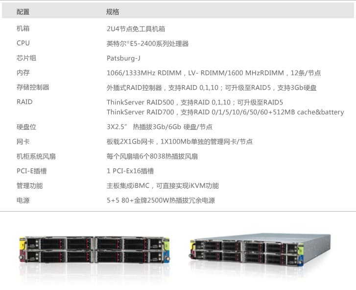

方案介绍
主要功能
- 采用了先进的人脸识别技术，针对不同光照条件优化，针对人脸姿态优化，针对眼镜、刘海等干扰因素优化，采用形状回归技术，针对监控视频优化
- 先进3D建模技术及人脸姿态矫正技术
- 采用先进的大数据存储、处理技术，实现真正意义的数据线性水平扩展，通过复制、校验、检测等技术手段保证数据的可靠
- 提供了多种人脸采集技术手段
- 实现对动态视频图像和静态图片中人脸的识别和处理
- 高效的人脸识别和人脸比对性能
- 支持对PB级人脸图片数据的存储管理
- 支持并发识别处理，可同时为多个用户进行检索
- 灵活的接口模块实现与其它业务系统的快速业务集成
性能特点
- 人脸采集条件
- 识别（允许）人脸旋转角度：左右 -30～+30 度，上下-15～+15度
- 人脸检测最小尺寸：18像素
- 人脸识别最小尺寸：48像素
- 人脸采集亮度：人脸区域大于80，并小于140
- 人脸系统速度
- 比对速度：单机100 万次/秒 （支持几十台机器并行比对）
- 建模速度：单机逾100 万张/24 小时（640*480 图像，支持多机并行建模）
- 人脸识别率
- 识别准确率：在千万人数据库中，目标人脸像素>60x60，无明显逆光、昏暗和变形的情况下，首位命中率达到92%，前100位命中率达到97%
- 人脸数据存储量
- 大数据管理：支持对海量（亿级）人脸图片的有效管理
- 秒级响应速度：实现对海量人脸图片的秒级搜索响应
- 平台可动态扩展：对人脸图片存储提供动态扩展的解决方案
- 分布式的处理技术：大大提高了对人脸的分析、处理、检索效率
核心设备
联想ThinkServer系列服务器以其高端的性能，强大的CPU处理能力，高密度的配置，兼容开放的架构，绿色环保低功耗等优势，完美的支撑了人脸大数据解决方案，为用户提供舒适的客户体验，有效的保障了各部门、各警种的业务实战应用。
ThinkServer SD330
超高性价比，能效比的高密度2U4节点服务器
联想ThinkServer SD330是一款拥有超高性价比、超高能效比的高密度2U4节点服务器，是专为大型数据中心设计的高密度计算、缓存服务器，凭借计算密度高、网络性能强大、绿色环保、易于管理、灵活部署特点，为企业级用户打造坚实可靠的平台，能够帮助用户大幅降低数据中心在空间、电费、管理等方面的整体成本。
主要应用
综合门户网站的内容频道，网络视频，博客，即时通信；社区网站的个人空间等。具有大量访问需求的互联网业务；网络游戏中休闲类中小型游戏服务器；需要增强的可扩展性和快速配置灵活性来将基础架构与工作负载相匹配的高密度超大规模主机服务；大内存的cache服务器，电子商务B2B/B2C、数据资讯搜索及云计算，互联网等中间件、中小企业数据库、监控管理中心。
产品亮点
- 高密度部署：2U空间可装入4台独立两路服务器
- 新一代英特尔® 至强TM E5系列EN平台处理器，单节点最大支持192G内存，提供强劲性能
- 每台机柜最多部署12台服务器，实现48节点
- 支持IPMI2.0+iKVM，可通过IP将本地的键盘、鼠标、显示器、光驱、软驱和存储设备复位定向到远端被管服务器，实现完全的远程接管
- 联想全国的服务支持，全程呵护
- 优化设计节省成本
- 降低功耗节省服务器运行成本
- 成本优化与多节点共享机箱/电源的主要特点，帮助客户降低成本，共享关键零部件
- 集中散热管理
- 集中管理风扇，4节点共享两风扇模组，每个风扇模组使用2个80*38的风扇，服务器会收集4节点温度，并根据温度调整风扇转速
- 管理电源模块，4节点共享两个1100W电源，如果其中一个电源损坏不能正常工作，服务器会监控4节点功率，并采取降频等措施
- 高品质安全可靠
- 延承Tnink基因的高品质
- 精益求精，覆盖架构、选料、流程
- 较业界标准更严酷的测试
产品规格
ThinkServer SS430
互联网Web接入应用的超高密度服务器
联想ThinkServer SS430是一款面向互联网Web接入应用的超高密度服务器。与传统机架式服务器相比，SS430在标准的2U空间内可以支持4个独立的服务器节点，具有高密度、低能耗、高网络性能、易管理等特性，非常适合有大规模横向发展需求的互联网企业。
主要应用
适用于互联网服务提供商如，博客；即时通讯；社区网站的个人空间等具有大量访问需求的互联网业务网络游戏登录服务器。
产品亮点
- 低投入高产出
- 机箱宽体架构设计，提升能效，降低功耗
- 1+1冗余80Plus白金电源，高效利用能源
- 入门级价格，点亮企业级基础应用全价值链
- 高品质安全可靠
- 延承Think基因的高品质
- 精益求精，覆盖架构、选料、流程
- CPU、内存等核心部件，到风扇、电源等辅件全冗余
- 较业界标准更严酷的测试
产品规格
ThinkServer DC5000 整机柜交付服务器产品
企业级运算优化服务器
联想ThinkServer DC5000机柜式服务器，是联想创新设计的新一代高密度、低能耗数据中心运算优化服务器产品。具有高密度、高能效、模块化设计等三大优势。完美支撑IPDC行业用户关键任务的稳定、高效运行。
产品亮点
- 低投入高产出
- 44U高整机柜式服务器
- 每个服务器节点可以支持热插拔
- 集中式供电，集中式散热
- 5+5冗余2500W 80Plus金牌电源、高效利用电源
- 全ThinkServer家族跨平台主要部件复用
- 入门级价格，点亮企业级基础应用全价值链
- 完善的管理软件
- 可随时随地全面掌控的Remote Management Control
- 高品质安全可靠
- 延承Think基因的高品质
- 精益求精，覆盖架构、选料、流程
- CPU、内存等核心部件，到风扇、电源等辅件全冗余
- 较业界标准更严酷的测试
主要应用
适用于承载云数据中心接入、缓存、数据库、分布式文件系统等应用
产品规格

实战案例
- 可以对重点场所稽查布控，实现人脸黑名单比对报警
- 户籍办证时，可以验证人员真实身份，避免重复办证现象
- 刑侦办案时，可以快速搜索嫌疑人照片
- 情报研判时，可以综合多方面资料，查找线索
- 安保活动时，可以及时确定关注对象身份
- 社会服务，支持百姓寻人寻亲、失踪人员查找等需求